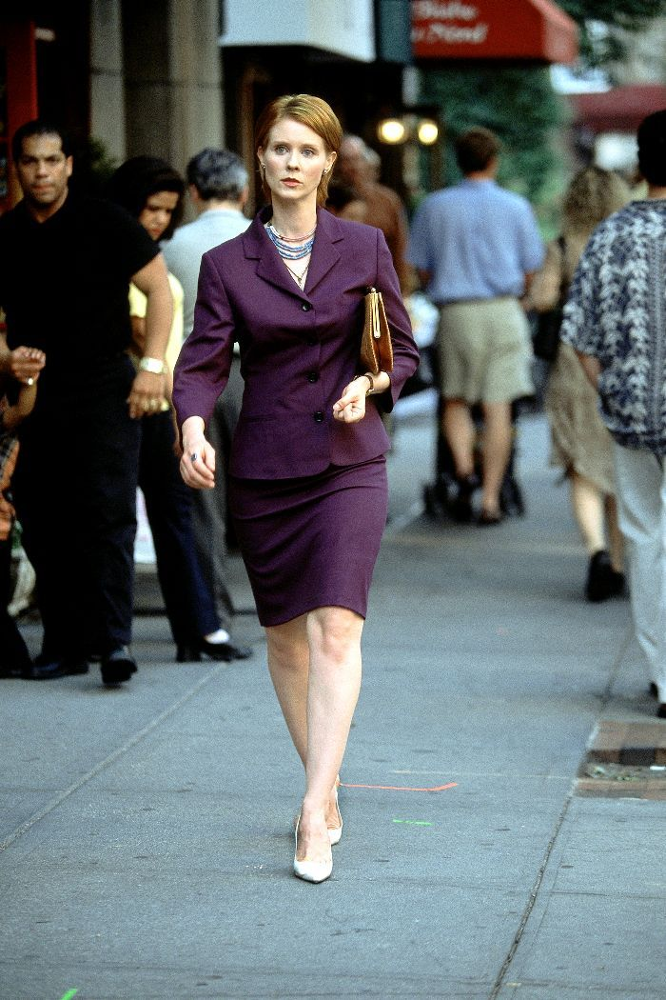
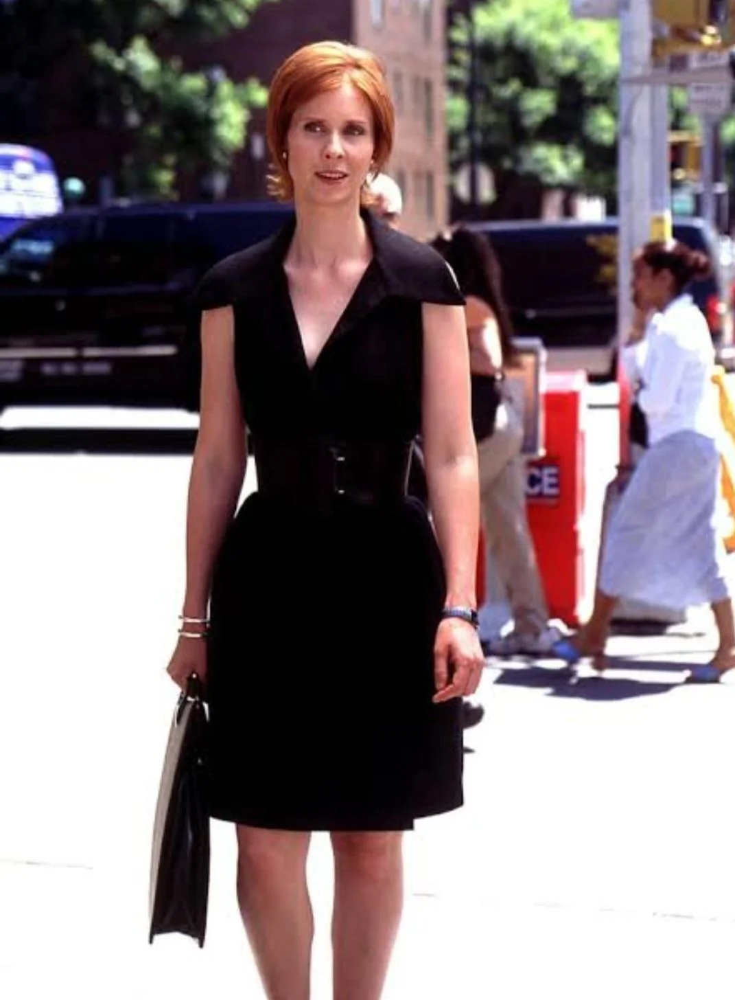
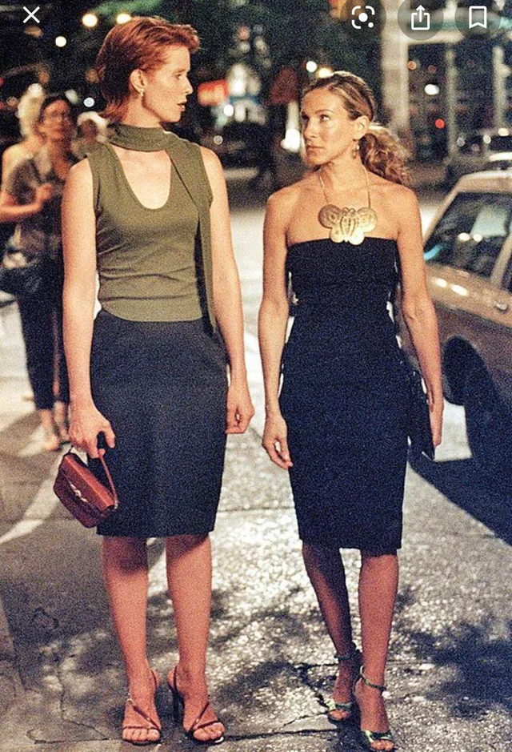
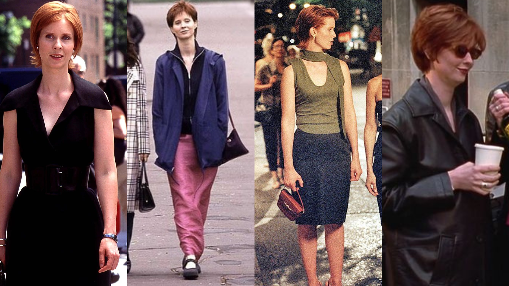

Miranda Hobbes' fashion style reflects her sharp, professional, and independent personality. As a successful lawyer, Miranda’s wardrobe is both stylish and practical, focusing on smart, tailored pieces that exude confidence and authority. Her outfits often feature structured blazers, pencil skirts, and high heels, reflecting her no-nonsense approach to both her career and life. Miranda tends to gravitate toward darker colors like black, navy, and deep jewel tones, with an occasional pop of color to add interest. Her style is all about mixing professionalism with a touch of femininity, offering a balance of sophistication, power, and subtle elegance.



